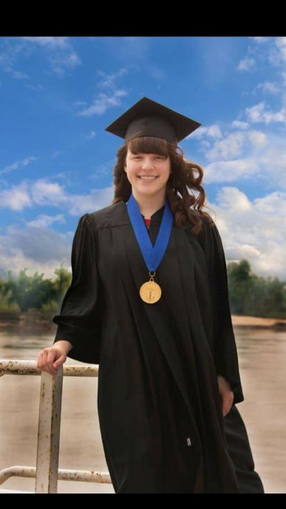

Shyanne Marie Roberts was born in Sioux City, Iowa on June 26th, 1998. Her parents David and Wendy Raff had lived a few miles away in Dakota City where Shyanne spent her life growing up all through grade school. Both of her parents attended the same high school, which is how her parents first met but it was after high school when they started a relationship with one another. Shyanne’s father was in the military so there were times throughout her childhood where she had to deal with the heartbreak of her father leaving for extended periods of time.
Shyanne did really well in high school on all aspects from an academic level, sports, and social aspect. Shyanne and I met in high school and started dating my freshman year, she was a grade a head of me. We dated all through high school and eventually got married afterwards. Shyanne went on to attend Morningside College in Sioux City Iowa where she obtained her bachelor's degree in biology after 4 long years of studying and hard work. After College, Shyanne and I moved to Omaha Nebraska in search of better opportunities in both of our careers.
Shortly after moving to Omaha, Shyanne and I found out that we had a baby on the way and our lives changed drastically. With my career continually progressing, Shyanne had to step away from her career goals and help take care of our child. With a kid on the way, Shyanne and I decided that we needed to a place of our own and chose to have a house built in Bennington Nebraska, where we are both fortunate enough to spend all the time we need to with each other since she is full time mom and I have the ability to work from home.